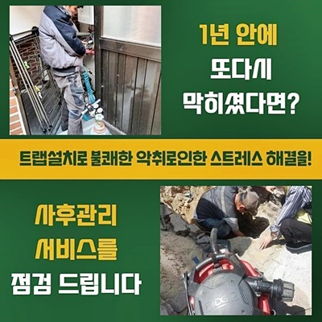
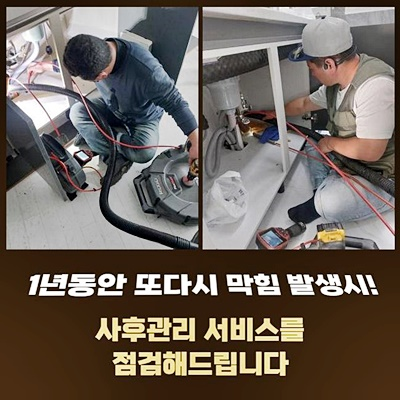
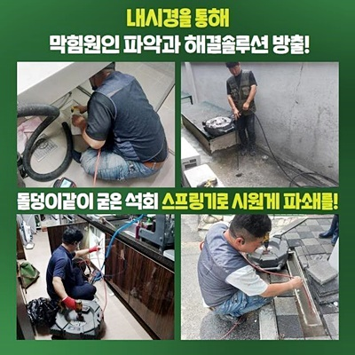
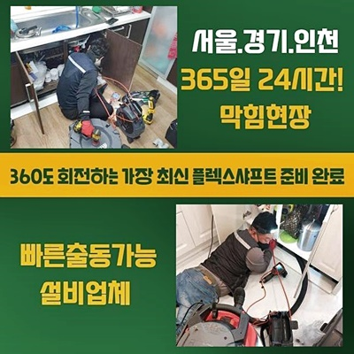
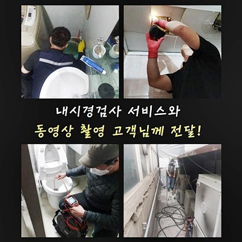
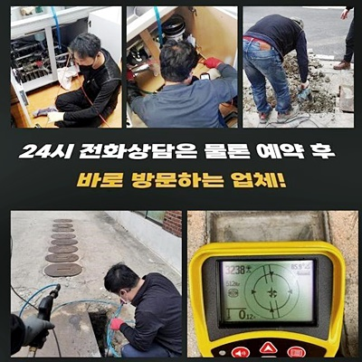
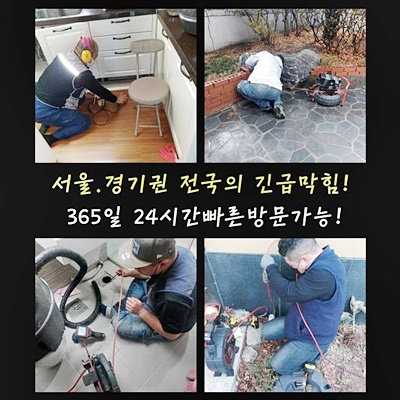

🏠 부천 고강본동세탁기배수구막힘 오정동 냄새차단 수리업체
용인시 처인구 배관막힘 전문 시공 후기

📋 작업 개요
- 위치: 용인시 처인구, 수원시 영통구, 화성시 동탄
- 서비스 유형: 배관막힘, 고압세척, 내시경점검
- 작업 일시:
- 업체명: 하수구수사대 (010-5615-2118)
🔍 문제 상황
부천 고강본동세탁기배수구막힘 오정동 냄새차단 수리업체
많은 사람들이 이용하시는 건축물에서 막히는 양상이 생겨나는 바람에 달려간 현장을 같이 볼 예정인데요
확인해보니 물이 솟구치고 있었고 바닥쪽엔 하수들로 악취까지 발생했다 설명하셨어요
조치를 배제한 상태로 방치할 시 상태는 심각해지기에 신속하게 해결을 위해 방문을 드리게되었어요
저희들은 신속한 작업들을 진행해 고객분을 도와드리는데요
이렇다 할 결과가 없다면 비용들도 한푼도 받고있지 않으므로 문제 발생 시 반드시 해결해내는 저희업체에게 의뢰를 맡기세요
일단 해야되는 건 내시경으로 안측을 관찰해야하죠 협소한 배관을 관찰할땐 내시경장치가 요구됩니다
내시경의 끝에는 촬영용 부품이 달려있어서 점검 과정에서 군데군데 선명하게 보여주는데요
내시경으로 확인해보았더니 안쪽은 붉은 형태로 변하게 된것을 알 수 있었는데 붉게 물든게 기름때라고 생각하시면 되겠는데요
이러한 모습은 꽉 막혀버린 상황입니다
이러한 문제는 각 라인에서 나가는 잔해가 중앙으로 집결하며 잔여물질도 침전되는 까닭에 다량이 쌓여버리게 되면 문제들은 반드시 생겨나기 마련입니다
이런 문제를 마주하면 일상에 불편함이 발생될수밖에 없는데요
다수가 사용하는 공간이라면 관리적 측면을 우선시하고 위생수칙을 준수하며 사용되어야 오류가 발생치 않고 지속적으로 쓰실 수 있으시답니다

🔎 원인 분석
💡 전문가 진단: 정밀 진단 장비를 사용하여 슬러지의 고착 여부를 판명하고 타격/세척 작업을 실시했습니다.
기름들을 버리시거나 음식물들의 잔재나 물에 놓지 않는 것들처럼 막혀버리는 문제를 야기하는 이물들을 흘려보내지않고 관리해주시면 해당 사안처럼 불미스러운 일이 불거지지 않겠죠?
문제의 양상은 심각한 상태였고 흡착물들도 대량이였던 상황이였죠
원인들을 짚어내기위하여 트랩부품을 들어내고 안쪽을 관찰해보고 관로의 끝지점도 파악해봅니다
원인에 대한 규명을 철저하게 실시하지 않는다면 향후 행할 과정도 의미없다 보아야하죠 우선시 되는건 증세를 없애는것에 있으나 재발하는 사태가 안일어나는게 중요해요
배수만 시켜놓고 가는것이 아닌 향후 쓰시면서 증상이 야기되지않아야 의뢰인분들의 만족이 상승하게됩니다
해당 현장은 관리책 실시가 빈틈없이 이어나가지 못했던 상태로 파악되었고 너저분하게 방치된것임을 파악할 수 있었습니다
통수오류들이 잦거나 심각성이 두드러진다면 관리를 해주지않은 현장일텐데요
여러사람이 씀으로 인해 주기적인 청소를 때때로 신경써야하는데 그럴 겨를이 없어보이셨어요
해당 세대의 배수관이 막혔다면 대개 특정부위의 장애라고 여기겠지만 안타깝게도 관리가 늦어질수록 각각의 세대별로 증세를 전가시켜요
해당 상황이 벌어졌을땐 시공관련 비용까지 커지게되고 시간까지 길어지게되서 고객의 불편들이 누적될 수 밖에 없어요
저희전문가들에게 호소를 하셨어요
현장을 다니다보면 남은 음식쓰레기를 변기통으로 버리시기도 하고 기름들도 주방 배수구에 버리십니다
기름들은 주방 배수구에 버리면 추후에 증상이 생겨나게되고 키친타올 등으로 닦고서 설거지를 해주시기 바라요

🔧 작업 과정
저희전문진은 이와같은 한번 수리를 해드리고 끝내는것이 아닌 일년간 무상보증을 제공해드리므로 여러분들이 불안해하지않고서 쓰신다고 감사를 표하시기도 해요
저희전문진은, 해결하는것이 우선이지만 작업계획 수행이 완벽해야된다고 여기기에 훌륭한 장치를 가용합니다
먼저 내시경기기를 선두로 해 석션장치와 샤프트기기랍니다 현장마다 꼭 있어야합니다
샤프트의 경우 머리쪽이 노커체인으로 구성되어있어 이물을 제거하는데에 효과를 보이는 기기에요
굳어진 이물들과 흡착된 기름들도 없애줍니다
곧바로 석션장비는 흡입시켜 오수들을 세척시킵니다
당연히 흡입해 뚫어내는게 목표이기에 그 결과도 좋아요 일상에서 이용하는 청소기용품과 유사하다고 보아도 무방합니다
철저하게 청소해주기 위해선 작업의 작업계획 수행이 각별히 신경써야할 점이죠 막힘의 원인들을 말끔하게 없애고 다시금 일어나지않게 조치해야해요
오랫동안 낡은것이 목격됐고 작업에 있어서 애로사항이 있었어요
해당 문제들은 뚫는것에만 초점을 맞추지않고 높은 수압으로 청소도 빈틈없이 진행되어야 새것과같이 미래에 문제도 발생되지 않아요
고압노즐분사기의 경우 라인을 연결시켜 하수도로 집어넣어 작업을 진행시키죠
오수들로만 이물없는 배수관을 형성하기에 위험없이 운용되어지는 장치입니다
고착된 잔해를 제거시키는 작용을 하게 됩니다
청결을 담당하는 기능도 겸비하고있기에 효과들은 상승하죠
전문가에 따라서 작업방식은 천차만별로 상이하단건 당연할 수 있겠으나 눈여겨 봐야할 건 작업 이후에 재발증세가 되느냐 안 되느냐의 사안으로 접근해야합니다
저희의 경우 지금까지 완벽한 대처를 배양시켰고 저희로 말씀드리자면 빠른 방문덕에 조속히 조치들을 해냅니다
어디라도 한시간안에 찾아뵙는게 가능하여 문의를 주시는 의뢰자들이 많으시답니다
막힘이 생겨날 시 누구나 곤경에 처하게 되고 조속히 잠재우고싶은 생각뿐이실거에요
저희전문가가 다녀가고서 단순히 종료가 아닌 1년의 시간에 걸쳐 무상보증도 제공하니 걱정없이 이용해도 무방해요
세대들이 유의사항을 신경써서 생활할 경우 문제 발생은 발생되지 않겠습니다
개인만의 문제들이 아닌 까닭에 여러명이 협업하여 관리를 수습해야하죠


✅ 작업 완료
일부라도 잘못된다라면 오늘 현장처럼 전반적으로 증상이 됩니다
그래서 징후가 야기되면 전문가를 찾아야겠습니다
최근들어 뚫기위하여 약들을 사용하는 고객님이 계시는데요
해당 방식들이 소용이 없다라는건 아니나 사용 후 개선되지 못하면 깊은 부분까지 문제가 있는 경우가 많아 이왕이면 업체와 손을 잡아 바로 잡아야되겠죠?
작업이 끝나면 내시경으로 놓친 부분은 없는지 확인하고 이상없이 막혀버린 사안이 해결되면 철수를 해요
시정되지 못한 현장이라면 수리비를 청구하지 않고있으니 부담없이 문의하시면됩니다




⚠️ 하수구 배관 막힘 예방 및 관리 가이드
- ✅ 머리카락, 비닐, 물티슈 등 물에 분해되지 않는 이물질은 절대 흘려보내지 마세요.
- ✅ 기름기 많은 식기는 설거지 전 키친타올로 먼저 기름때를 닦아내세요.
- ✅ 주기적으로 배수구에 뜨거운 물을 가득 부어주어 유지방 고착을 방지하세요.
- ✅ 작업 후 1년 이내 재발 시 무상 A/S 보증 서비스를 제공합니다.
💡 핵심 정리
- 확실한 장비 작업(내시경 점검 및 샤프트 스케일링)으로 원인을 뿌리 뽑습니다.
- 작업 후 1년 이내에 동일한 부위 재발 시 100% 무상 A/S 서비스를 보장합니다.
- 서울 · 경기 · 인천 전 지역에 24시간 언제든 긴급 출동할 수 있도록 항시 대기 중입니다.
❓ 자주 묻는 질문 (FAQ)
🚨 용인시 처인구 배관막힘 문제로 고민이신가요?
정확한 원인 진단과 확실한 시공으로 재발 없는 해결을 약속드립니다.
24시간 긴급 출동 | 서울 · 경기 · 인천 전지역 | 1년 내 재발 시 무상 A/S